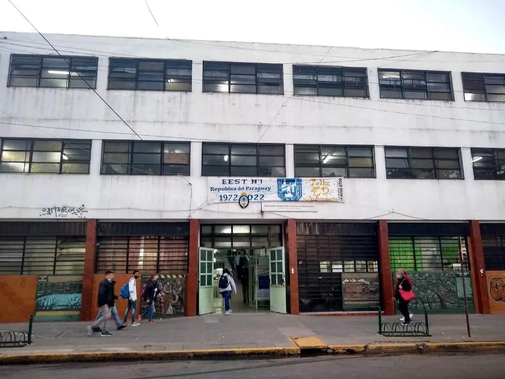
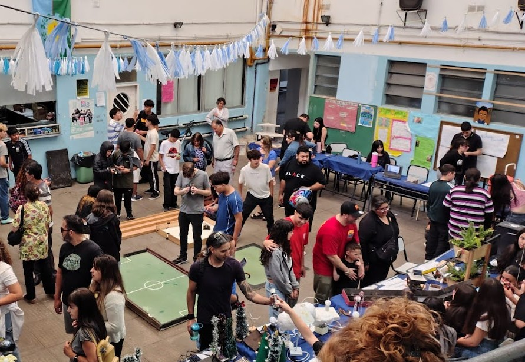
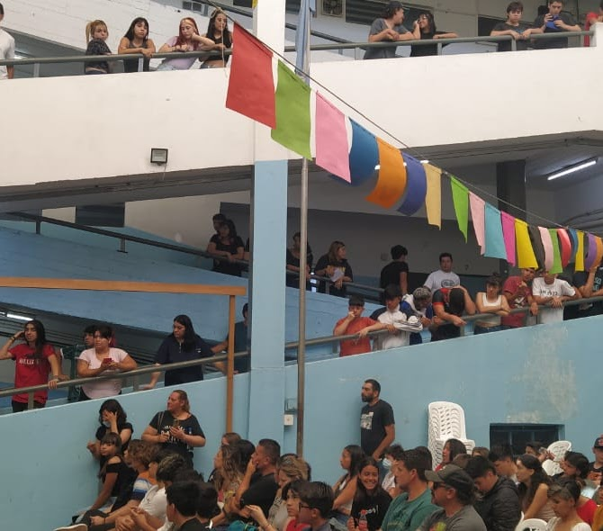

Escuela de Educación Técnica N°1 República del Paraguay
Título Adquirido
Técnica en Informática Personal y Profesional
- Ingreso: 2017
- Egreso: 2023
Conocimientos Adquiridos
Durante la tecnicatura en informática adquirí conocimientos teóricos y prácticos relacionados al área técnica. A lo largo de la formación realicé tareas de armado y mantenimiento de computadoras, limpieza de equipos, instalación de software y configuración de sistemas. Además, incorporé conocimientos en bases de datos y desarrollo de aplicaciones, trabajando con lenguajes de programación como C#. Esta formación me permitió desarrollar habilidades técnicas, capacidad de resolución de problemas y una base sólida para desempeñarme en el área informática.


